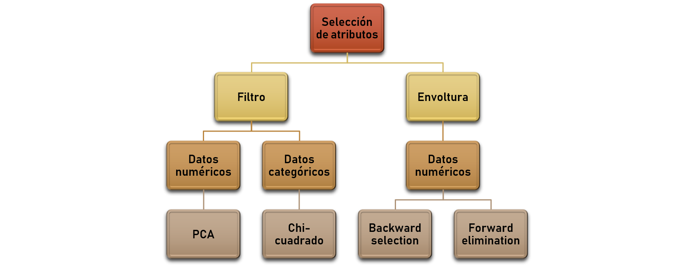
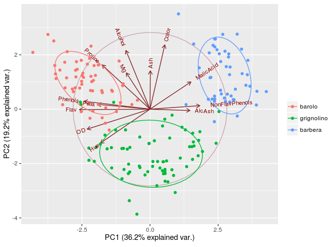

Algoritmos de reducción de dimensiones
Los problemas de asociacion o reducción de dimensiones buscan descubrir reglas que apliquen a una gran proporción de los datos, como por ejemplo las personas que compran A suelen comprar B.
 Entre las técnicas de reducción de dimensiones se encuentran:
FEATURE SELECTION
Hay dos tipos de selección de procesos de selección de atributos:
De filtro y de "envoltura" (wrapper). Los de filtro seleccionan aquellos atributos que cumplen ciertos requisitos establecidos
mientras que los de wrapper seleccionan iterativamente sólo los atributos que mejoran la performance del algoritmo.
Los algoritmos de filtro no requieren de ningún algoritmo de aprendizaje, mientras que los de "envoltura" se optimizan
para un algoritmo en particular.
Los algoritmos de filtro pueden ser considerados "No supervisados" y se utilizan cuando hay muchos atributos o el costo
computacional es muy elevado.
ANÁLISIS DE COMPONENTES PRINCIPALES - PCA
 PCA nos ayuda a responder la pregunta de cuántos de los atributos de mi data set explican una cantidad significativa de la variación
contenida en el data set. En general aplica la regla 80/20, puede un 20% de los atributos explicar el 80% de la variación?.
PCA captura los atributos que contienen la mayor cantidad de variabilidad en el data set, esto lo hace transformando las variables
existentes en un set de "componentes principales" o nuevas variables que tienen las siguientes propiedades:
No están correlacionadas entre sí
Explican una gran cantidad de la varianza de los datos.
Puedenser relacionados con las variables originales por los coeficientes de ponderación.
Las variables con bajos factores de coeficiente de ponderación en sus componentes principales son removidas del data set.
Mediante una combinación lineal de las variables se crea un componente principal z.
.
Se realiza un análisis de los "eigenvalues" (valores propios) de la matriz de covarianza de los atributos originales.
El eigenvector (vector propio) asociado con el mayor eigenvalue es el primer componente principal, el vector asociado con el segundo
mayor valor de eigenvalues es el segundo componente principal y así sigue.
La covarianza explica cómo dos variables varían con respecto a sus medias.
PCA sólo trabaja con atributos numéricos.
Antes de eliminar cualquier variable debe realizarse un análisis de evaluación de los datos en el contexto del problema,
si hay ruido PCA puede sugerir como variables relevantes aquellas que no lo son dado que considera la variación.
No ayuda adicionar datos irrelevantes ni datos no correlacionados.
PCA es un algoritmo sensible a los rangos de las variables, para minimizar esto se debe normalizar la información.
MÉTODOS ENVOLVEDORES - WRAPPER
Las aproximaciones "envolvedoras" iterativamente seleccionan aributos para añadir o remover del data set basados en si la nueva información
mejora la precisión del modelo.
Una forma de realizar esto es empezar con una variable, y construir un modelo base. Luego añadir una segunda variable y comparar
con el modelo base anterior. Si la performance es mejor, hacemos de este modelo el nuevo modelo base, añadimos una tercer variable
y seguimos el mismo procedimiento. Si no se produce una mejora seleccionamos un nuevo atributo descartando el anterior y seguimos probando.
Este algoritmo se denomina "forward selection".
La forma inversa es iniciar con todos los atributos y remover una variable a la vez construyendo un nuevo modelo. En general
la variable a remover se selecciona considerando el valor del estadístico t , se deja fuera aquella con menor t valor. Este proceso
se llama "backward elimination".